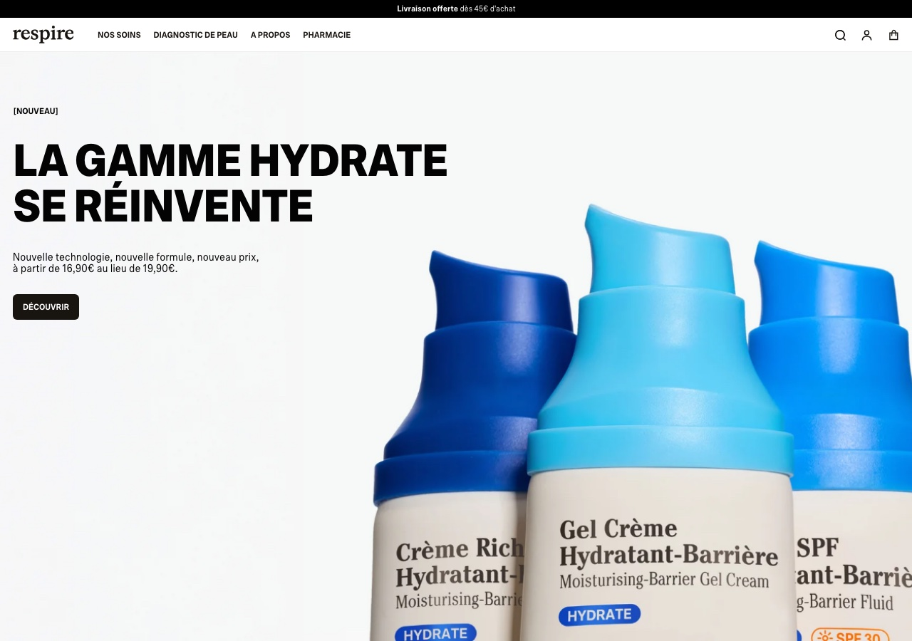
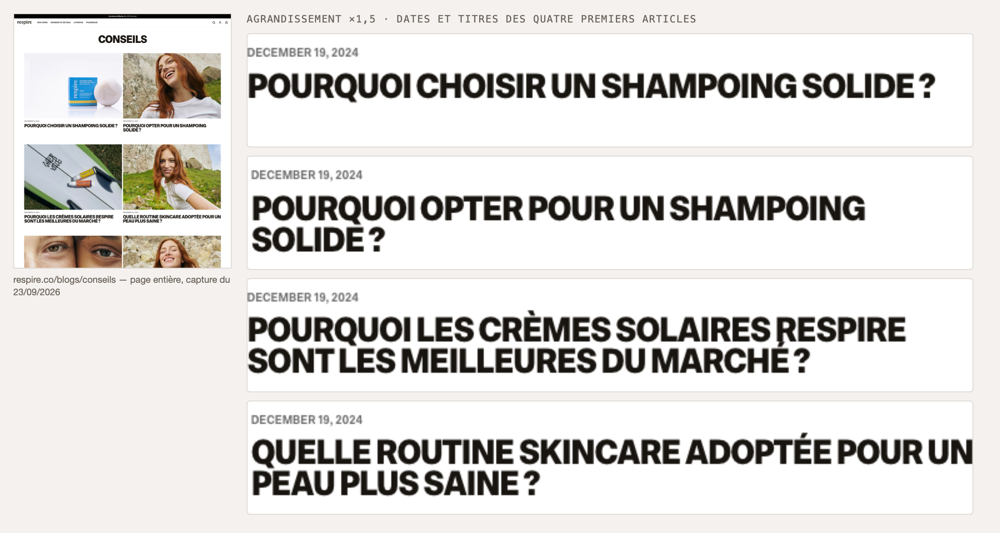

Audit de présence digitale
De la marque de déodorant naturel à la marque de dermocosmétique : audit de présence digitale et plan d'action à 90 jours.
Termes conservés en anglais. Uniquement des noms propres non traduisibles : noms de marques, de sociétés d'étude, de certifications (B Corp, Cosmos Organic) et de formats officiels de Meta (Reels, stories), qui portent le même nom dans l'interface française.
Respire n'a pas un problème de contenu : la marque a un problème de cohérence entre la notoriété qu'elle a acquise et la catégorie qu'elle revendique aujourd'hui.
Trois constats structurent cet audit.
La biographie Instagram et la page d'accueil annoncent désormais « la dermocosmétique nouvelle génération » et mettent en avant un stick solaire SPF50+ en visuel principal. Or l'univers de notoriété historique de la marque — celui qui remonte dans les recherches, les avis et la presse — reste le déodorant naturel sans sels d'aluminium. La marque a changé de promesse plus vite qu'elle n'a construit la preuve de cette promesse.
Les huit articles de la première page du blog « Conseils » portent tous la même date de publication (19 décembre 2024), deux d'entre eux traitent du même sujet en quasi-doublon, et plusieurs ciblent des catégories de produits (shampoing solide, savon solide) qui n'apparaissent plus dans le menu du site. Le contenu qui devrait porter la crédibilité dermatologique du nouveau positionnement travaille encore pour l'ancien.
Respire dispose de trois leviers déjà financés et sous-exploités en social : un volume d'avis clients affichés avec des notes de 4,0 à 4,8/5, un outil de diagnostic de peau intégré au site (dont le bouton d'appel porte, sur un site par ailleurs entièrement francophone, un libellé en anglais : « Réaliser mon diagnostic de peau »), et un compte fondatrice de 117 000 abonnés à l'origine même de la marque. Aucun des trois n'apparaît structuré en format éditorial récurrent.
Les six problèmes détaillés en section 08 et la roadmap en section 13 déclinent cette recommandation en actions séquencées sur 90 jours.
respire.co/blogs/conseils (titres, dates de publication, pagination).Le titre historique de ce document (« audit marketing digital 360° ») a été resserré en « audit de présence digitale » : trois canaux ne sont pas audités, parce qu'ils ne sont pas observables de l'extérieur sans accès ou sans abonnement, et il serait malhonnête de les faire figurer dans un « 360° ».
| Canal non audité | Ce qui a pu être observé malgré tout | Ce qu'il faudrait pour l'auditer |
|---|---|---|
| Publicité payante (Meta, Google) | Aucune donnée de dépense ni de performance n'est publique. La bibliothèque publicitaire Meta permettrait de relever les créations actives, pas leurs résultats. | Accès au gestionnaire de publicités ou relevé daté de la bibliothèque publicitaire Meta. |
| E-mail et CRM | Seul le point d'entrée est visible : un formulaire d'inscription à la newsletter en pied de page, sans contrepartie annoncée (voir 5.3). La séquence de bienvenue et le rythme d'envoi ne sont pas observables sans inscription. | Inscription-test datée, puis lecture des e-mails reçus sur 30 jours. |
| TikTok | Aucun lien TikTok en pied de page du site (voir 03). L'existence et l'activité d'un compte n'ont pas été vérifiées sur la plateforme. | Relevé du profil s'il existe : abonnés, rythme, formats. |
Les taux d'engagement publiés dans le secteur beauté ne sont pas comparables entre eux : selon la source, le taux est calculé sur le nombre d'abonnés ou sur le nombre de vues, ce qui produit des ordres de grandeur radicalement différents pour la même performance. Ce document précise systématiquement la formule employée avant toute comparaison. Les repères retenus sont détaillés en section 07.
Trois critères ont guidé ce choix, dans la logique d'un audit qui doit s'appuyer sur du réel :
| Élément | Constat | Nature |
|---|---|---|
| Secteur | Cosmétique / dermocosmétique naturelle, modèle DNVB avec distribution physique complémentaire | |
| Taille | Jeune entreprise française en forte croissance, passée du produit unique à un catalogue multi-gammes ; ni artisan, ni grand groupe | |
| Fondation | Créée par Justine Hutteau, lancement appuyé sur une campagne de crowdfunding Ulule fin 2018 et sur une communauté Instagram préexistante issue du running | |
| Produit d'origine | Déodorant naturel sans sels d'aluminium, fabriqué en France | |
| Positionnement affiché (2026) | « La dermocosmétique nouvelle génération. Pour une peau qui respire. » — identique en biographie Instagram et sur le site | |
| Catalogue observé | Six entrées de menu : Sélection · Préoccupations · Ingrédients · Soins du visage · Déodorants · Hygiène (dentifrices) | |
| Gamme de prix observée | De 10,90 € (recharge déodorant) à 27,90 € (sérum Glow & Protect) — positionnement haut de gamme accessible | |
| Plateforme e-commerce | Shopify, avec sélecteur multi-pays (≈ 55 destinations) et trois langues (français, espagnol, italien) | |
| Réseaux liés depuis le site | Instagram, LinkedIn, Facebook. Aucun lien TikTok ni YouTube en pied de page |
Compte analysé : @respirenaturel · Observations du 26 août 2026
| Indicateur | Valeur observée | Lecture |
|---|---|---|
| Abonnés | 281 000 | Communauté large pour une marque française indépendante ; niveau « macro-compte » |
| Publications cumulées | 2 062 | Actif produit sur environ 7 ans d'existence — soit un rythme moyen historique de l'ordre de 5 à 6 publications par semaine |
| Abonnements du compte | 7 | Compte fermé : la marque ne suit presque personne, y compris pas ses propres créateurs de contenu ni ses pharmacies partenaires |
| Biographie | « La dermocosmétique nouvelle génération. Pour une peau qui respire. » | Promesse de catégorie, sans bénéfice client explicite ni appel à l'action |
| Compte fondatrice lié | @justinehutteau — 117 000 abonnés, biographie « Co-fondatrice @respirenaturel » | Second actif d'audience, non intégré au dispositif éditorial de la marque |
La lecture combinée de la biographie actuelle et de la biographie historique du compte — laquelle mentionnait « soins d'hygiène naturels · efficaces · vegan · recyclables · fabriqués en France · mixtes » et renvoyait explicitement à la fondatrice — met en évidence un glissement de ligne éditoriale :
Ce glissement est cohérent avec le catalogue : la navigation du site est désormais organisée par préoccupation et par ingrédient, deux grilles de lecture typiques de la dermocosmétique et étrangères à l'univers de l'hygiène. Mais il crée une tension éditoriale : la marque doit tenir un discours d'expertise clinique devant une audience recrutée sur un discours d'engagement écologique et de proximité.
Le volume cumulé de 2 062 publications rapporté à l'ancienneté du compte suggère un rythme historique moyen supérieur au repère sectoriel. Les repères sectoriels 2026 situent la médiane des marques autour de 3,7 publications hebdomadaires, avec une recommandation convergente de 3 à 4 publications par semaine, plusieurs études soulignant que la fréquence élevée n'améliore pas le taux d'engagement.
Lecture : le sujet pour Respire n'est vraisemblablement pas de publier davantage, mais de publier de manière plus lisible. Un volume élevé sans architecture de piliers produit de la présence, pas de la mémorisation.
Trois repères sectoriels 2026, avec leurs formules respectives :
| Source | Repère beauté | Formule de calcul |
|---|---|---|
| Emplifi (Q2 2026, monde) | Médiane ≈ 2,9 % par publication sur Instagram ; carrousel et Reel identifiés comme formats les plus performants | Engagement par publication |
| Dash Social (2026) | Cible recommandée 2,0 – 2,5 % sur Instagram ; beauté mesurée à 0,2 % rapporté aux abonnés et 2,1 % rapporté aux vues | Double formule, explicitement distinguée |
| Rival IQ (via agrégateurs) | Médiane Santé & Beauté ≈ 0,14 % — plancher des secteurs suivis | Interactions ÷ abonnés |
Ce qu'il faut en retenir : pour un compte de 281 000 abonnés, la médiane sectorielle « par abonnés » correspondrait à un ordre de grandeur de quelques centaines d'interactions par publication. Une performance supérieure à 1 % rapporté aux abonnés placerait le compte nettement au-dessus des médianes publiées. C'est le premier chiffre à établir en interne : sans lui, aucun objectif d'engagement ne peut être fixé honnêtement. La section 12 propose donc des KPI en variation relative plutôt qu'en valeur absolue.
Les visuels produits accessibles publiquement (photos de produit sur fond neutre, macros de texture, mises en situation) présentent une charte cohérente et professionnelle : fonds clairs et neutres, macro-textures, packagings photographiés en série, système de nommage de fichiers structuré par gamme et par campagne (« DailyProtect », « Longevity », « Trois Sérums »).
Cette cohérence est un actif réel — mais elle a un revers : l'esthétique « produit sur fond neutre » est indifférenciable d'un concurrent à l'autre sur ce marché. Sur un fil Instagram, un flacon blanc sur fond beige n'est attribuable à aucune marque en particulier. La différenciation visuelle ne peut donc pas venir du produit ; elle doit venir du dispositif de mise en scène (visage, geste, contexte, avant/après), ce qui rejoint directement la recommandation phare.
| Format | Usage supposé chez Respire | Ce que disent les repères sectoriels 2026 |
|---|---|---|
| Publication statique / photo de produit | Vraisemblablement dominant | Format le moins performant en portée ; ne bénéficie pas de la distribution algorithmique hors abonnés |
| Carrousel | Probablement utilisé pour la pédagogie ingrédient | Identifié par Emplifi comme l'un des deux formats les plus performants du secteur beauté |
| Reel | Présent mais probablement non systématisé en série récurrente | Principal levier de portée hors abonnés ; les comptes les plus performants du secteur reposent sur un visage humain démontrant le produit |
| Story | Non observable publiquement | Taux de complétion élevé, mais interaction réelle sur stickers limitée à une fraction des vues |
| Contenu créé par les utilisateurs | Programme existant — un formulaire « Devenir créateur de contenu » est accessible depuis le pied de page du site | Les comptes de marques diffusant du contenu créé par leurs clients affichent un uplift médian d'engagement selon Emplifi |
Site analysé : respire.co · Observations du 26 août 2026
Trois formulations coexistent au premier écran :
Diagnostic. La proposition de valeur est compréhensible en 3 à 5 secondes sur le quoi (des soins naturels français) mais pas sur le pourquoi eux. « Dermocosmétique nouvelle génération » est une revendication de catégorie, pas un bénéfice : elle ne dit ni quel problème est résolu, ni en quoi la formulation diffère de celle d'un concurrent qui coche les mêmes quatre cases. Sur ce marché, « naturel + français + vegan + éco-responsable » est un socle d'entrée partagé par la totalité des concurrents directs analysés en section 07 — ce n'est donc plus un différenciateur.

| Élément | Constat |
|---|---|
| Architecture du menu | Six entrées principales, déclinées en plus de 24 sous-catégories. Trois entrées différentes (« Préoccupations », « Ingrédients », « Soins du visage ») pointent vers la même collection racine /collections/visage |
| Conséquence | Trois chemins mentaux distincts (« j'ai un problème », « je connais l'actif », « je cherche une catégorie ») aboutissent au même point d'entrée, ce qui annule le bénéfice de la segmentation affichée |
| Aide à la décision | Un outil de diagnostic est présent — entrée de menu « Diagnostic de peau », dont le bouton d'appel est libellé en anglais, « Réaliser mon diagnostic de peau », sur un site par ailleurs entièrement francophone (libellé relevé le 23/09/2026) — ainsi qu'un sélecteur guidé « Pour… je cherche… pour… » sur la page d'accueil |
| Réassurance | Quatre blocs standardisés en pied de page : livraison offerte dès 45 €, soin offert dès 60 €, livraison sous 4 à 5 jours ouvrés, paiements sécurisés |
| Preuve sociale | Carrousel de verbatims clients nominatifs avec notes affichées de 4,0 à 4,8/5 selon les produits, et page « Avis Respire » dédiée |
| Internationalisation | Sélecteur d'environ 55 pays, tous en euros, pour trois langues seulement — un utilisateur coréen, japonais ou brésilien accède à une expérience francophone tarifée en euros |
Les CTA transactionnels sont présents, nombreux et bien placés : bouton « Ajouter » sur chaque vignette produit, « Découvrir » sur le visuel principal, « Tout voir » à chaque niveau de menu, panier persistant affichant en temps réel le reste à atteindre pour la livraison offerte (« Plus que 45,00 € pour bénéficier de la livraison offerte en point relais ») et sélecteur de cadeau intégré au panier.
Le dispositif de conversion e-commerce est donc mature. Ce n'est pas là que se situe le problème.
En revanche, un CTA manque : celui qui s'adresse au visiteur qui n'est pas prêt à acheter. Le 26 août 2026, le formulaire d'inscription à la newsletter était relégué en pied de page, sans contrepartie annoncée (ni contenu, ni diagnostic, ni avantage). Sur une marque qui bascule vers la dermocosmétique — une catégorie où la décision d'achat suppose de comprendre sa propre peau avant de choisir un actif — l'absence de captation du visiteur en phase de découverte est un manque à gagner direct sur le coût d'acquisition.
| Étape | Ce qui se passe | Friction identifiée |
|---|---|---|
| 1. Découverte | Arrivée depuis Instagram ou une recherche de marque | Le visuel d'accueil met en avant un solaire ; un visiteur venu pour le déodorant ne retrouve pas immédiatement l'univers qui l'a fait venir |
| 2. Orientation | Choix entre Préoccupations, Ingrédients, Soins du visage, Déodorants… | Trois entrées redondantes vers la même collection ; charge cognitive inutile |
| 3. Qualification | Diagnostic de peau disponible | L'outil n'est pas mis en avant au premier écran comme voie d'entrée alternative à la navigation catalogue |
| 4. Évaluation | Fiche produit avec note, actifs et bénéfice résumé | Nomenclature technique dense (acide azélaïque 10 %, prébiotiques, bakuchiol) : forte crédibilité pour l'initié, barrière possible pour l'audience héritée « hygiène naturelle » |
| 5. Décision | Ajout au panier, seuils de gratuité, cadeau à sélectionner | Étape la mieux traitée du parcours — aucune friction majeure identifiée |
| 6. Sortie sans achat | Le visiteur quitte le site | Friction principale. Aucun mécanisme de rattrapage visible autre qu'une newsletter sans promesse en pied de page |
Test réalisé sur une requête transactionnelle à forte intention et directement liée au produit historique de la marque : « meilleur déodorant naturel sans sels d'aluminium ». Résultats consultés le 26 août 2026 :
Déduits de la structure du site, des intitulés de collections et des titres d'articles :
| Famille de requêtes | Exemples déduits de la structure du site |
|---|---|
| Produit historique | déodorant naturel, déodorant sans sels d'aluminium, déodorant solide, recharge déodorant, dentifrice naturel |
| Ingrédient / actif | acide hyaluronique céramide, vitamine C ginseng rouge, acide salicylique prébiotique, filtres solaires, bakuchiol |
| Préoccupation cutanée | taches pigmentaires, cernes teint terne, imperfections excès de sébum, déshydratation sécheresse cutanée |
| Contenu éditorial existant | choisir une crème hydratante, choisir sa crème solaire, routine skincare, shampoing solide, shampoing sans sulfate, savon solide naturel |
L'architecture par préoccupation et par ingrédient est une bonne pratique SEO : elle crée des pages de collection alignées sur des intentions de recherche réelles. Le socle technique est donc sain.
Cinq constats vérifiables sur l'index du blog « Conseils » :
Les huit articles de la première page portent la même date : 19 décembre 2024. La pagination indique cinq pages d'archives. Un blog SEO se construit par régularité ; une publication massive à date unique est le signe d'une opération ponctuelle de production de contenu, non d'une stratégie éditoriale entretenue. À la date de cet audit, cela représente environ vingt mois sans nouvelle publication visible en tête d'index.

Deux articles distincts, publiés le même jour, traitent du même sujet sous deux titres quasi identiques : « Pourquoi choisir un shampoing solide ? » et « Pourquoi opter pour un shampoing solide ? ». Deux URL différentes pour une intention de recherche unique : les deux pages se concurrencent pour le même mot-clé et se privent mutuellement d'autorité.
Plusieurs articles portent sur le shampoing solide, le shampoing sans sulfate et le savon solide naturel. Or ces catégories n'apparaissent plus dans le menu produit du site, qui ne référence que soins du visage, déodorants et dentifrices. Le contenu éditorial travaille donc à attirer un trafic que la marque ne peut plus convertir.
Le site héberge deux espaces éditoriaux distincts : /blogs/actualites, lié depuis le menu principal « À propos », et /blogs/conseils, accessible uniquement depuis le pied de page sous le libellé « Blog & Conseils ». La ressource la plus utile pour un visiteur en phase de découverte est donc celle qui est la moins accessible, et l'autorité éditoriale du domaine est répartie entre deux silos qui ne se maillent pas.
Un titre d'article illustre à lui seul l'angle éditorial dominant : « Pourquoi les crèmes solaires Respire sont les meilleures du marché ? ». Ce format d'article ne répond à aucune requête informationnelle : il répond à une question que personne ne tape. Un contenu SEO efficace se positionne sur le problème du lecteur (« quelle crème solaire pour peau grasse ? »), pas sur la supériorité de l'annonceur.
Trois concurrents directs réels, tous français, tous positionnés sur la cosmétique naturelle ou la dermocosmétique accessible, tous en concurrence frontale avec au moins une gamme de Respire.
| Ce qu'ils font mieux | Une audience Instagram d'environ 1 million d'abonnés pour un volume de publications comparable à celui de Respire (≈ 2 191), et un hub éditorial structuré — « Le Carnet » / bibliothèque — présenté comme rédigé par des experts internes sur les ingrédients, les formulations et les préoccupations cutanées. C'est exactement le dispositif de crédibilité que Respire n'a pas construit. |
| Ce qu'ils font moins bien | Un positionnement volontairement minimaliste et froid, entièrement porté par la marque et non par un visage. Modèle exclusivement direct-to-consumer (« Exclusively at Typology.com »), sans le maillage pharmacie qui donne à Respire une caution santé physique. |
| À retenir | La preuve d'expertise peut être industrialisée sous forme de contenu permanent et devenir un actif SEO autant qu'un actif de marque. |
| Ce qu'ils font mieux | Un modèle de récurrence assumé : kit de démarrage, contenant réutilisable, recharges livrées à fréquence choisie. Une proposition de valeur immédiatement mémorisable (« arrêter d'acheter de l'eau ») et un adossement financier solide — levées successives de 10 M€ en 2021, 1,4 M€ en 2022 et 21 M€ en mars 2024. Certification B Corp. |
| Ce qu'ils font moins bien | Des points de friction publiquement documentés dans les avis clients tiers : abonnement perçu comme tacite et difficile à résilier, ruptures de stock sur certains parfums. Un positionnement centré sur l'écologie et le geste, moins sur la performance dermatologique. |
| À retenir | Une proposition de valeur qui tient en une phrase et se démontre en dix secondes vaut mieux qu'une liste d'attributs cochés. Respire vend déjà des recharges sans en avoir fait un récit. |
| Ce qu'ils font mieux | Un produit héros unique et racontable : le Baume Magique, présenté comme remplaçant une dizaine de produits, formules limitées à huit ingrédients, certification Cosmos Organic, fabrication dans le sud de la France. Rentabilité affichée avec 1 M€ de ventes dès 2020 et une croissance annoncée de 60 % en 2023. |
| Ce qu'ils font moins bien | Une notoriété et une audience nettement inférieures à celles de Respire et Typology, une internationalisation très faible (environ 5 % des ventes à l'export en 2023), et un passage à « Qui veut être mon associé ? » en janvier 2024 qui n'a pas abouti à un accord avec le jury. |
| À retenir | Le contre-modèle exact de Respire : là où Respire multiplie les gammes et les actifs techniques, Les Petits Prödiges concentrent tout le discours sur un produit et une promesse. La lisibilité est une stratégie. |
| Critère | Respire | Typology | 900.care | Les Petits Prödiges |
|---|---|---|---|---|
| Positionnement affiché | Dermocosmétique nouvelle génération, naturelle et haute performance | Skincare essentiel, minimaliste, parisien | Hygiène et entretien rechargeables, sans eau | Cosmétique minimaliste multi-usages, Cosmos Organic |
| Abonnés Instagram | ≈ 281 000 | ≈ 1 000 000 | Non relevé dans les sources consultées | Non relevé dans les sources consultées |
| Publications cumulées | ≈ 2 062 | ≈ 2 191 | Non relevé | Non relevé |
| Contenu éditorial / SEO | Deux blogs séparés, dernier bloc d'articles daté du 19/12/2024, doublons observés, sujets hors catalogue | Hub éditorial permanent attribué à des experts internes, structuré par ingrédient et préoccupation | Espace presse fourni ; discours de marque porté par les fondateurs et le modèle produit | Discours porté par la simplicité de formulation et le récit des fondatrices |
| Modèle de conversion | E-commerce Shopify + retail (Monoprix, Sephora, pharmacies) ; seuils de gratuité, cadeau panier, parrainage | D2C exclusif, revendiqué comme tel | Abonnement recharges avec kit de démarrage | E-commerce + revendeurs spécialisés bio |
| Preuve mobilisée | Avis clients massifs (4,0 – 4,8/5), charte de formulation, comité scientifique, pharmacies partenaires | Expertise éditoriale et transparence de formulation | Impact chiffré (réduction de déchets plastiques par foyer), certification B Corp | Nombre d'ingrédients, certification bio, polyvalence du produit |
| Élément différenciant | Le maillage pharmacie + une fondatrice identifiable de 117 000 abonnés | La bibliothèque de contenu comme actif de marque | La récurrence par abonnement | Le produit héros unique |
Six problèmes, chacun formulé sous la forme constat observable → conséquence commerciale, et chacun rattaché explicitement à une section de l'audit.
La biographie Instagram et la page d'accueil annoncent « la dermocosmétique nouvelle génération », alors que la notoriété acquise, les avis les plus visibles et l'univers de recherche associé restent centrés sur le déodorant naturel. Conséquence : la marque supporte le coût d'acquisition d'une nouvelle catégorie sans bénéficier de sa légitimité, et son audience héritée ne se reconnaît plus dans la promesse affichée — ce qui dégrade mécaniquement le rendement de chaque publication auprès de la base existante. (→ sections 04.2, 05.1)
Les huit articles de la première page du blog Conseils portent la même date du 19 décembre 2024, et deux d'entre eux traitent le même sujet sous des titres quasi identiques. Conséquence : aucune capture du trafic informationnel sur les nouvelles gammes (sérums, solaires, anti-imperfections), deux pages qui s'annulent mutuellement sur la même requête, et une dépendance accrue au trafic de marque et au trafic payant. (→ section 06.3 A et B)
Plusieurs articles ciblent le shampoing solide, le shampoing sans sulfate et le savon solide naturel, catégories absentes du menu produit actuel. Conséquence : le trafic éventuellement généré arrive sur des contenus sans produit associé — un trafic non convertissable, qui dégrade le taux de conversion global du site sans contrepartie commerciale. (→ section 06.3 C)
Le blog « Conseils » n'est accessible que depuis le footer, tandis que le blog « Actualités » figure au menu principal. Conséquence : le visiteur en phase de découverte — exactement la population qu'un repositionnement de catégorie génère — ne trouve pas le contenu qui pourrait l'éduquer, et l'autorité éditoriale du domaine se disperse entre deux silos non maillés. (→ sections 05.2, 06.3 D)
La proposition de valeur est une liste d'attributs (français, vegan, sans ingrédients controversés, éco-responsable) et les fiches produits sont construites autour de la nomenclature technique. Un titre d'article du blog demande même pourquoi les crèmes solaires de la marque sont les meilleures du marché. Conséquence : le discours reste centré sur l'annonceur, ce qui limite la résonance émotionnelle, l'engagement organique et le partage — sur un socle d'attributs par ailleurs partagé par tous les concurrents analysés, donc non différenciant. (→ sections 05.1, 06.3 E, 07.4)
Un programme de recrutement de créateurs de contenu existe via un formulaire dédié, sans format éditorial récurrent associé ; un volume important d'avis clients notés 4,0 à 4,8/5 est affiché sur le site mais pas décliné en social ; un compte fondatrice de 117 000 abonnés, à l'origine historique de la marque, fonctionne en parallèle du compte marque. Conséquence : la marque paie pour produire de la preuve et ne la diffuse pas là où se joue la découverte, alors que les repères sectoriels 2026 désignent la vidéo courte incarnée comme le format le plus performant du secteur. (→ sections 04.1, 04.6, 05.2)
| N° | Problème | Impact commercial estimé | Effort de correction | Priorité | Horizon |
|---|---|---|---|---|---|
| P2 | Contenu éditorial gelé et cannibalisé | Élevé | Faible | 1 | Mois 1 |
| P4 | Blog Conseils inaccessible depuis le menu | Moyen | Très faible | 1 | Mois 1 |
| P6 | Actifs de preuve non mis en circulation | Élevé | Moyen | 1 | Mois 1 – 2 |
| P1 | Catégorie revendiquée mais non prouvée | Très élevé | Élevé | 2 | Mois 1 – 3 |
| P5 | Discours centré marque, pas client | Élevé | Moyen | 2 | Mois 2 – 3 |
| P3 | Contenu SEO orphelin de produit | Faible à moyen | Faible | 3 | Mois 2 |
| Pilier | Part | Contenu | Problème traité |
|---|---|---|---|
| 1. Preuve & démonstration | 35 % | Résultats à visage humain, protocoles sur 14 ou 28 jours, tests d'usage, explication d'un actif par le problème qu'il résout, prise de parole du comité scientifique | P1 (légitimité de la catégorie), P6 (actifs de preuve) |
| 2. Problème client | 25 % | Le vécu avant le produit : peau qui tiraille en fin de journée, boutons de stress, transpiration en réunion, teint terne de rentrée, peur du déodorant naturel qui « ne tient pas » | P5 (discours centré marque) |
| 3. Preuve sociale & contenus clients | 20 % | Reprise des avis vérifiés déjà publiés sur le site, contenus des créateurs recrutés via le formulaire existant, témoignages de pharmaciens partenaires | P6 (contenus créateurs et avis non diffusés) |
| 4. Produit & nouveautés | 15 % | Lancements, saisonnalité, recharges, kits et routines — traités en fin de séquence éditoriale, jamais en ouverture | Maintien de la pression commerciale |
| 5. Communauté & coulisses | 5 % | Fondatrice, laboratoire, charte de formulation, arrivées en pharmacie, co-construction produit avec la communauté | P1 (continuité de récit), P6 (actif fondatrice) |
| Format | Pourquoi en priorité | Cadence cible |
|---|---|---|
| 1. Reel « une personne, un problème, un protocole » | Format sous-exploité selon l'audit, et identifié par les repères sectoriels 2026 comme le principal levier de portée hors abonnés dans le secteur beauté ; les comptes les plus performants reposent sur un visage humain qui démontre, pas sur une photo de produit animée | 2 par semaine, en série récurrente identifiable |
| 2. Carrousel pédagogique « le problème d'abord » | Identifié par Emplifi comme l'un des deux formats les plus performants du secteur ; c'est aussi le format le plus recyclable en article de blog, donc le pont naturel entre le social et la correction du problème P2 | 1 par semaine |
| 3. Story interactive de qualification | Sondages et questions permettent de collecter en continu la matière du pilier « problème client », et de router l'audience vers le diagnostic de peau déjà en ligne — donc vers de la donnée de première main | 3 à 4 séquences par semaine |
Ces trois formats représentent le socle. Le post statique reste utilisé pour l'annonce commerciale pure, en volume réduit.
Rythme : 4 publications au fil par semaine, conforme au repère sectoriel de 3 à 4 publications hebdomadaires, plus les séquences de stories. Séquence pensée pour une rentrée de septembre.
| Sem. | Jour | Pilier | Format | Sujet | Objectif |
|---|---|---|---|---|---|
| S1Poser la preuve | Lundi | Problème client | Reel | « Ma peau a changé cet été » — teint terne, taches, déshydratation post-vacances, sans citer de produit | Notoriété |
| Mercredi | Preuve & démonstration | Reel série | Épisode 1 du protocole 28 jours : une personne réelle, sa peau au jour 0, son objectif, sa routine | Engagement | |
| Vendredi | Preuve sociale | Carrousel | Cinq avis clients vérifiés issus du site, repris tels quels avec la note et le produit concerné | Conversion | |
| Dimanche | Produit | Post statique | Rappel de la gamme solaire en fin de saison + logique de transition vers la routine d'automne | Conversion | |
| S2Éduquer | Lundi | Problème client | Carrousel | « Pourquoi votre déodorant naturel semble moins tenir en septembre » — thermorégulation, transition de température | Engagement |
| Mercredi | Preuve & démonstration | Reel série | Épisode 2 du protocole : jour 7, ce qui a changé et ce qui n'a pas encore changé — y compris l'inconfort initial | Engagement | |
| Vendredi | Preuve & démonstration | Reel | Un actif expliqué par le problème : l'acide azélaïque, pour qui, pour quoi, en combien de temps | Notoriété | |
| Dimanche | Communauté | Story + post | Une pharmacie partenaire présente les questions qu'on lui pose le plus souvent sur les déodorants sans aluminium | Fidélisation | |
| S3Qualifier | Lundi | Problème client | Reel | « Trois routines pour trois peaux » — le même geste ne convient pas à tout le monde, appel au diagnostic de peau | Conversion |
| Mercredi | Preuve & démonstration | Reel série | Épisode 3 : jour 21, résultat visible, commentaire du comité scientifique sur ce qui est attendu et ce qui ne l'est pas | Engagement | |
| Vendredi | Preuve sociale / contenu client | Reel créateur | Premier contenu issu du programme créateurs : usage réel, non scripté, sans studio | Notoriété | |
| Dimanche | Produit | Carrousel | Kits et routines : comment les produits s'articulent entre eux plutôt que ce que chacun fait isolément | Conversion | |
| S4Convertir | Lundi | Problème client | Carrousel | « Ce que j'aurais aimé savoir avant de passer au naturel » — les erreurs de transition, sans promotion | Engagement |
| Mercredi | Preuve & démonstration | Reel série | Épisode 4 : jour 28, bilan complet, avant/après, et ce que le protocole n'a pas résolu | Conversion | |
| Vendredi | Preuve sociale | Carrousel | « Vous nous avez demandé » : reprise des cinq questions les plus posées en story ce mois-ci, avec réponses | Fidélisation | |
| Dimanche | Communauté | Reel | Prise de parole de la fondatrice : pourquoi la marque est passée de l'hygiène au soin, raconté comme une histoire | Notoriété |
| Objectif | Transformer l'outil de diagnostic déjà en ligne en mécanique d'acquisition et de collecte de données de première main — répond à P1 (prouver la légitimité dermo) et à la friction de sortie sans achat identifiée en 5.4 |
| Mécanique | Sept jours, un rendez-vous quotidien en story : jour 1, le diagnostic de peau ; jours 2 à 6, un geste par jour expliqué par le problème qu'il résout ; jour 7, restitution collective des résultats agrégés du diagnostic (« 41 % d'entre vous ont une peau mixte déshydratée, voici ce que ça change »). Inscription par formulaire avec, en contrepartie, une routine personnalisée envoyée par e-mail. |
| Canaux | Stories quotidiennes, deux Reels d'appel, e-mail de séquence, bandeau dédié en page d'accueil |
| Pourquoi elle fonctionne | Elle ne demande aucun développement : l'outil, la page de diagnostic et le formulaire existent déjà. Elle crée le CTA « non-acheteur » qui manque au site, et elle produit de la matière éditoriale réutilisable pendant trois mois. |
| Objectif | Activer massivement le programme créateurs existant et convertir le stock d'avis clients en contenu social — répond à P6 et P5 |
| Mécanique | Appel ouvert à cinquante clientes et clients déjà utilisateurs, recrutés via le formulaire créateur de contenu en place et via la base e-mail. Chacun documente un protocole de 28 jours sur un problème précis. La marque fournit les produits et un cadre de tournage minimal — pas de script. Publication en série sur le compte marque, avec relais depuis le compte fondatrice. Les meilleurs contenus alimentent les fiches produits et les campagnes payantes. |
| Canaux | Reels marque, compte fondatrice, fiches produits, e-mail, réutilisation en publicités sur les réseaux sociaux |
| Pourquoi elle fonctionne | Elle produit, à coût marginal, exactement le format que les repères sectoriels 2026 désignent comme le plus performant du secteur — une personne réelle qui utilise le produit — et elle donne au repositionnement dermocosmétique la seule preuve qui compte pour un consommateur : le résultat de quelqu'un qui lui ressemble. |
Sans accès aux coûts d'acquisition ni à la structure de marge de la marque, tout chiffrage précis serait arbitraire. Les deux campagnes ont été conçues pour reposer prioritairement sur des actifs existants (outil de diagnostic, formulaire créateurs, base d'avis, compte fondatrice) plutôt que sur de la production nouvelle. Le tableau ci-dessous donne néanmoins un ordre de grandeur des ressources à mobiliser, pour que la proposition puisse être arbitrée : ce sont des hypothèses de travail, à remplacer par les coûts réels de la marque.
| Campagne | Poste | Charge interne estimée | Coût externe estimé |
|---|---|---|---|
| A — « Ma peau en 7 jours » | Conception et rédaction des 7 stories et des 2 Reels d'appel | 3 à 4 jours-personne | 0 € |
| Tournage au smartphone et montage | 2 jours-personne | 0 € | |
| Séquence e-mail (3 envois) et bandeau page d'accueil, sur les outils déjà en place | 1 à 2 jours-personne | 0 € | |
| Option : amplification payante des 2 Reels d'appel | — | 300 à 500 € | |
| B — « Preuves à l'appui » | Recrutement, sélection et cadrage des 50 participants | 3 jours-personne | 0 € |
| Produits envoyés : 50 routines de 3 produits, expédition comprise | 1 jour-personne (logistique) | ≈ 3 000 € en valeur prix public ; coût de revient plausible de 1 000 à 1 500 € pour une marque de cosmétique, à confirmer avec la marge réelle | |
| Suivi des 50 protocoles sur 28 jours, sélection et montage des contenus | 6 à 8 jours-personne | 0 € | |
| Option : amplification payante des 8 meilleurs Reels | — | 600 à 1 000 € | |
| Total sur le trimestre | ≈ 16 à 20 jours-personne | ≈ 1 000 à 1 500 € de produits, plus 900 à 1 500 € d'amplification optionnelle | |
Lecture : à l'échelle d'une marque distribuée en pharmacie et en grande distribution sélective, ces montants sont ceux d'un test, pas d'un plan média. La charge interne est le vrai coût — elle correspond à environ un cinquième d'un temps plein sur trois mois, ce qui est la ressource à sécuriser avant de lancer la campagne B.
| Objectif | KPI principal | Méthode de mesure réaliste | Cible à 3 mois |
|---|---|---|---|
| Notoriété | Portée des comptes non abonnés, par publication | Statistiques du compte Instagram, moyenne glissante sur 30 jours, segmentée par format afin d'isoler l'effet Reels | + 30 % de portée non-abonnés vs base de référence |
| Notoriété | Part des Reels dans le volume publié | Comptage direct hebdomadaire | Passer à 50 % du volume au fil (2 Reels sur 4 publications) |
| Engagement | Taux d'engagement par publication, calculé sur la portée | (J'aime + commentaires + partages + enregistrements) ÷ portée. Formule à figer et à documenter pour rester comparable dans le temps ; repère sectoriel 2026 : 2,0 à 2,5 % sur Instagram | Atteindre la fourchette 2,0 – 2,5 %, ou + 25 % si la base est déjà supérieure |
| Engagement | Enregistrements et partages sur les contenus « problème client » | Statistiques par publication, comparées au pilier produit sur la même période | Les piliers 1 et 2 surperforment le pilier produit sur ces deux métriques |
| Conversion | Nombre de diagnostics de peau complétés | Statistiques du site sur le parcours de diagnostic, avec attribution de la source | Base de référence à établir, puis + 50 % sur le trimestre grâce à la campagne A |
| Conversion | Sessions organiques sur les pages de conseil | Search Console : impressions, clics et position moyenne sur les URL du blog, avant/après remise en ligne et remaillage | + 40 % de clics organiques sur le blog vs le trimestre précédent |
| Fidélisation | Taux de réponse aux stories interactives | Statistiques des stories : réponses aux sondages et aux questions rapportées aux vues | Maintenir un flux d'au moins 30 verbatims exploitables par mois pour alimenter le pilier 2 |
| Fidélisation | Volume de contenus clients livrés | Suivi du programme de créateurs existant (formulaire Airtable en place) | 50 protocoles engagés, 30 contenus exploitables livrés |
| Priorité principale | Remettre en marche la machine à contenu et établir la base de référence chiffrée |
| Actions |
|
| Réévalué en fin de phase | La base de référence est-elle au-dessus ou en dessous des repères sectoriels ? Selon la réponse, les objectifs de la section 12 sont recalibrés — c'est le seul moment où ils peuvent l'être honnêtement. |
| Priorité principale | Installer la preuve comme format reconnaissable et rebrancher l'actif fondatrice |
| Actions |
|
| Réévalué en fin de phase | La série protocole surperforme-t-elle le pilier produit sur la portée non-abonnés ? Si oui, elle passe de deux à trois épisodes hebdomadaires. Si non, l'angle est revu avant d'augmenter le volume. |
| Priorité principale | Transformer ce qui fonctionne en système reproductible et rendre le nouveau positionnement lisible partout |
| Actions |
|
| Réévalué en fin de phase | Bilan complet sur les huit KPI de la section 12. Décision structurante : la part du pilier « preuve » redescend-elle de 35 % à 25 % au profit du problème client, ou la légitimité dermocosmétique demande-t-elle un trimestre supplémentaire de sur-investissement ? |
Audit de présence digitale — Respire · Projet de portfolio · Observations du 26 août 2026 · Version 2 du 23 septembre 2026 · Fin du document